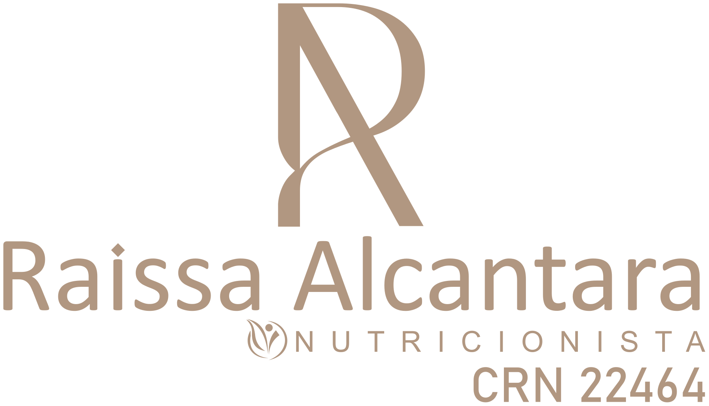

01 · ESCUTA
Seu ponto
de partida
Entender sua rotina, suas preferências e suas dificuldades é o primeiro passo para definir objetivos que façam sentido.
História e necessidades
Vamos conversar →Da primeira conversa às pequenas conquistas: descubra um acompanhamento com espaço para sua história, suas escolhas e seus recomeços.
Conhecer o acompanhamento ↓Você participa das escolhas.
O plano acompanha a sua vida.
Entender sua rotina, suas preferências e suas dificuldades é o primeiro passo para definir objetivos que façam sentido.
História e necessidadesOrganização das refeições e orientações adaptadas ao seu contexto, respeitando os alimentos que você gosta e tem acesso.
Escolhas individualizadasOs retornos ajudam a entender o que funcionou, acolher os obstáculos e ajustar as estratégias ao longo do caminho.
Acompanhamento e acolhimentoQue tal observar sua rotina hoje? Marque as ações que fizeram parte do seu dia, sem cobranças.
Cada pequeno cuidado conta.
Comece pelo que foi possível hoje.
Demonstração interativa. As marcações não são salvas nem enviadas.
As mudanças são construídas a partir da sua realidade. O objetivo é encontrar estratégias possíveis e sustentáveis, respeitando suas preferências.
A proposta é individualizar o cuidado após conhecer sua história e suas necessidades. As orientações e o formato do plano são definidos durante o atendimento.
A evolução pode aparecer na organização da rotina, na relação com a comida e na percepção de bem-estar. Os indicadores relevantes são combinados com a profissional.
Prepare sua mensagem na seção de contato da página inicial. O canal de agendamento ainda será informado antes da publicação do site.
Ir para contato →Vamos encontrar um cuidado que faça sentido para você?
Quero saber mais →